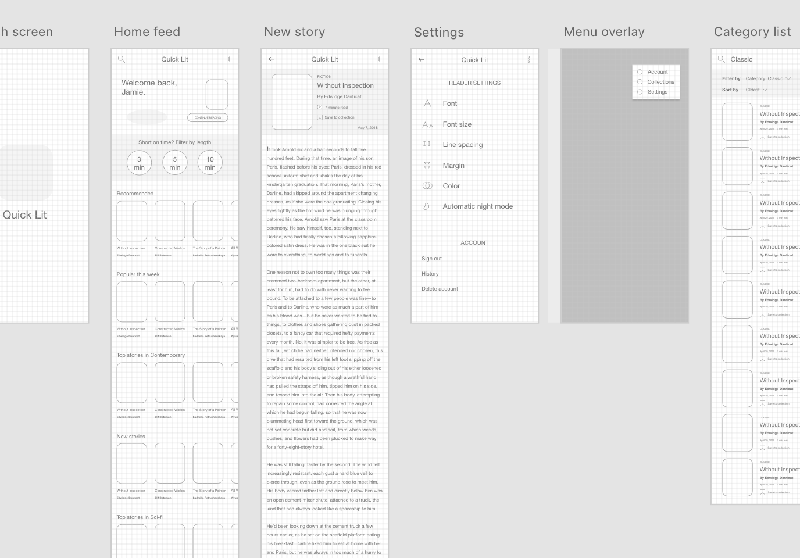

| Date | Spring 2019 |
| My Role | Designer, Researcher |
| Tools | Adobe Xd, Notion, Ikonate, Undraw |
The Problem
I noticed a pattern. People wanted to read more but struggled to focus or find the energy to tackle traditional books after a long day at work or school. Reading for a few minutes a day, in the form of short stories, could help people get back into the habit of reading. Thus, the idea for Quick Lit was born.
Research
Reading should be a leisure activity, so why does it feel like work? To determine what was standing between people and their reading goals, I pulled relevant quotes from discussions on Reddit's r/books. Then I tagged each of the 65 quotes with its topic ("reasons for not reading", "e-reading", etc.).
Combining these findings with existing research on reading habits, I formed three groups of potential users:
- Group A — Was a "reader". Goal is to start reading again.
- Group B — Is a "reader". Goal is to discover new genres, authors, other works by favorite authors. Usually uninterested in reading short stories or on a small mobile device.
- Group C — May want to become a "reader". Goal is to try the app. (This group is largely absent from r/books, by definition).
Quick Lit is primarly intended for Group A, but must also accomodate Group B and welcome Group C members.
To synthesize the research, I used the "MoSCoW" method to create a list of must have, should have, could have and won't have features:
Must Have
- Personalized home feed
- Ability to save stories for later (or offline) reading
- Stories from various sources
Should Have
- Secure sign-in
- Related stories (to encourage further reading)
- Create collections of short stories
Could Have
- Comment on stories
- Upload own short stories from sources
Won't Have
- Ability to write and post own stories
Wireframes
Created wireframes with Adobe Xd for testing prior to creating a high-fidelity prototype
Mockup Screenshots

User Testing
Without a budget or panel to turn to for my side project, I recruited a friend to test the prototype by completing the following tasks:
- Onboarding
- Find a story to read
- Go back to home feed
- Continue reading story
- Add a story to "Read Later" collection
- Change color of page in the settings menu
- Find stories from the category, "Contemporary"
- Sign out of account
I also took note of key observations during the test:
- User tried to turn on automatic night mode to change the page color to black (instead of looking under the "color" setting)
- User did not notice the menu bar until scrolling to the bottom of the home feed
- User scrolled up and down looking for the "Collections" tab in the menu bar
- User was not sure if the settings were saved automatically or not
Some areas of weakness and future improvements include:
- Difficulty locating settings icon → Replace adjustment slider icon with gear icon
- Difficulty noticing tab bar initially → Page cover preview may make tab bar blend in with rest of feed. Try adding color to tab bar.
- Confusion regarding turning on "night mode" (black background with white text) → Consolidate "color" and "automatic nightmode" options into one category
Areas the user enjoyed:
- Time-to-read estimate
- "Welcome back" banner at the top of the home feed
- Easy to resume story from bottom menu
- "Everything is in reach [of my thumb]."
At the end of the test, I asked the user to discuss their overall experience, what they enjoyed the most/least, who they think the app is designed for, and what other apps they use on a daily basis.
Project Retrospective
In an ideal world, I would be able to test the app with multiple users with actual content and personalized feeds.
I would like to perform unmoderated user tests with User Testing or a similar service to uncover other potential pain points in the design. Also, I would like to determine what other features users expect beyond the baseline features included in this iteration.
View Prototype